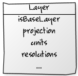

Once Upon a Time... OpenLayers
History
Google Maps
- Announced on February 2005
- IMO, one of the most influential applications on the 2000 decade
- Brings to the masses the possibility to explore the world
- Fire starter for the current GIS explosion
OpenLayers
- First release on June 2006
- Open alternative to Google Maps and Bing made by a group of MetaCarta employees
- On 2007 OpenStreeMap starts using it on
the Slippy Map
References
OpenLayers Wiki here,
Wikipedia entry here
The Map
The map is the central piece on a web mapping application
and is represented by instances of the OpenLayers.Map class.

- The map has some important properties: projection,
zoom levels (resolutions), units, etc
- A map contains one or more layers
- A map can contain one or more controls
- An application can have one or more maps but instances of layers and controls attached to a map
can't be used on another one
The source code is the best place to learn
The Map
Code Example
This sample shows how to create a very simple map with a layer and some controls:
Layers
The concept of Layer allows us to group/classify the elements that
must be rendered on the Map
All layers inherits from the base class OpenLayers.Layer, which
defines some common properties for all subclasses:
name Every has a name (that is used in the LayerSwitcher controlopacity A value in the range 0..1 that determines its opacityprojection The projection of the data contained in the layermaxExtent The maximum extent of the dataresolutions A list of map resolutions (map units per pixel) in descending order- ...

Remember, the source code is the best place to learn
Base Layers and Overlays
OpenLayers differentiates two kinds of layers: Base layers and
Overlays.
- Base layers controls several aspects of the map (like the projection
used by the Map)
- Base layers are mutually exclusive, only one can be shown at a time
- There could be any number of Overlays
- The
isBaseLayer property inherited from
OpenLayers.Layer determines the kind of layer.
- The
allOverlays property of the
OpenLayers.Map class allows all layers works as overlays.

Did I say the source code is the best place to learn ?
Base Layers and Overlays
Code Example
This example shows a map with a couple of WMS layers, one acting as base layer
and the other as overlay:
Types of layers
There are two main types of layers: Raster (imagery) and
Vector (features).

Raster layers
- Raster layers shows imagery from different service provider:
Google, Bing, a WMS server, OSM, etc
- All Raster layers inherits from
the base class OpenLayers.Layer
- The OpenLayers.Layer.Grid class allows to work with a lattice of tiles
Raster layers
Example working with WMS projection and opacity
Vector layers
Describe features, renderers, strategies, protocols, etc
Style Themes
Customizes the colors, typography, and layout of slide content.
<link rel="stylesheet" href="/path/to/css/style-theme.css">
Transition Themes
Defines transitions between slides using CSS3 transitions. Less capable browsers fall back to cutaways. But you aren’t using those browsers to give your presentations, are you…
<link rel="stylesheet" href="/path/to/css/transition-theme.css">
Extensions
Core gives you basic slide functionality with left and right arrow navigation, but you may want more. Here are the ones included in this deck:
-
deck.goto: Adds a shortcut key to jump to any slide number. Hit g, type in the slide number, and hit enter.
-
deck.hash: Enables internal linking within slides, deep linking to individual slides, and updates the address bar & a permalink anchor with each slide change.
-
deck.navigation: Adds clickable left and right buttons for the less keyboard inclined.
-
deck.status: Adds a page number indicator. (current/total)
-
deck.scale: Scales each slide to fit within the deck container using CSS Transforms for those browsers that support them.
Each extension folder in the download package contains the necessary JavaScript, CSS, and HTML files. For a complete list of extension modules included in deck.js, check out the documentation.
Nested Slides
That last slide had a few steps. To create substeps in slides, just nest them:
<section class="slide">
<h2>Extensions</h2>
<p>Core gives you basic slide functionality...</p>
<ul>
<li class="slide">
<h3>deck.goto</h3>
<p>Adds a shortcut key to jump to any slide number...</p>
</li>
<li class="slide">...</li>
<li class="slide">...</li>
<li class="slide">...</li>
</ul>
</section>
Other Elements: Images

<img src="http://placekitten.com/600/375" alt="Kitties">
Other Elements: Blockquotes
Food is an important part of a balanced diet.
Fran Lebowitz
<blockquote cite="http://example.org">
<p>Food is an important part of a balanced diet.</p>
<p><cite>Fran Lebowitz</cite></p>
</blockquote>
Other Elements: Video Embeds
Embed videos from your favorite online video service or with an HTML5 video element.
<iframe src="http://player.vimeo.com/video/1063136?title=0&byline=0&portrait=0" width="400" height="225" frameborder="0"></iframe>
Digging Deeper
If you want to learn about making your own themes, extending deck.js, and more, check out the documentation.
←
→
/
#